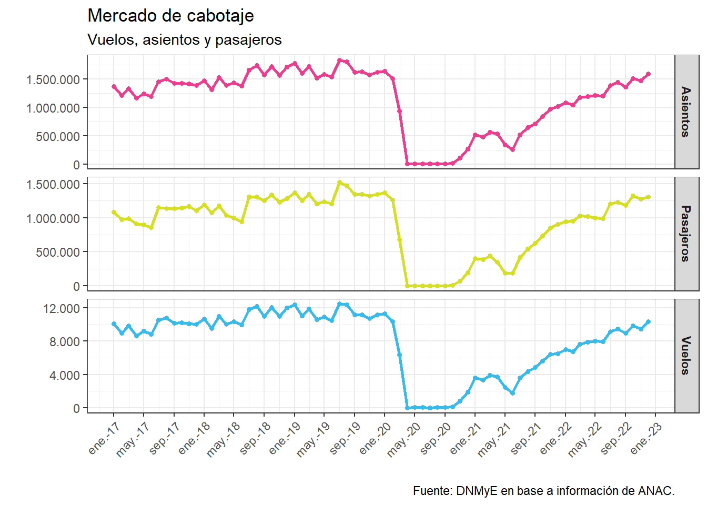
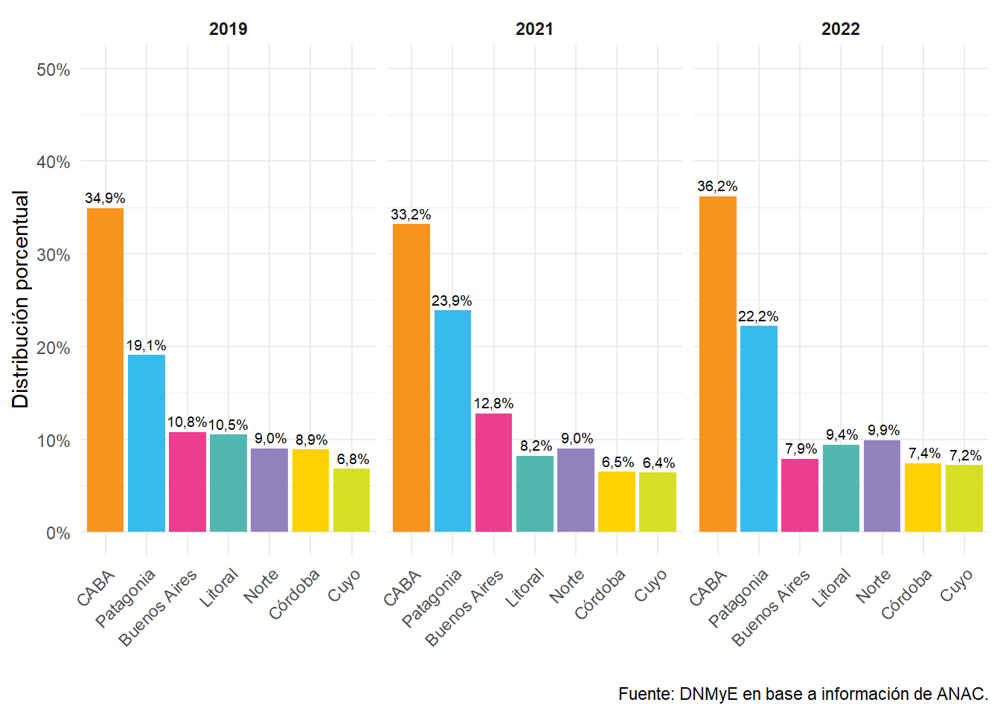
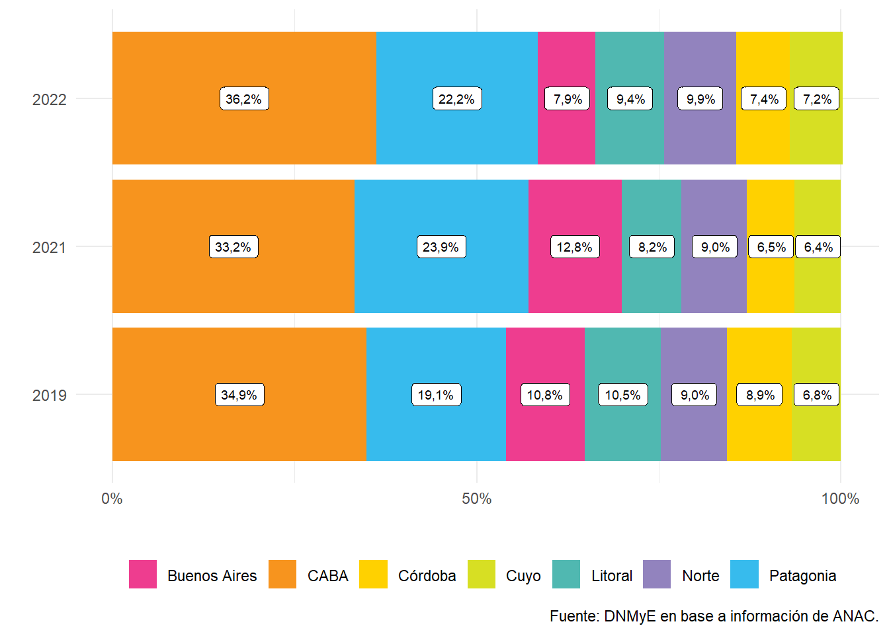
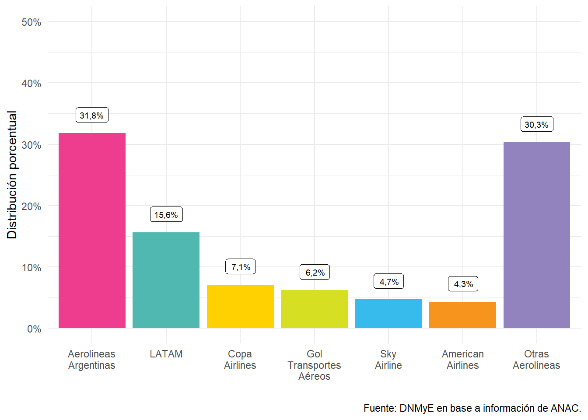

Capítulo 6 Transporte Aéreo
6.1 Introducción
En esta sección, se describe la información correspondiente al transporte aéreo de nuestro país en base a los datos obtenidos de la Administración Nacional de Aviación Civil (ANAC) sobre vuelos comerciales.
En el apartado siguiente, se estudian los vuelos de cabotaje considerando los arribos mensuales según región, provincia y localidad de destino.
Adicionalmente, en la sección que le continúa, se desarrolla la evolución del transporte aéreo internacional, a partir de las frecuencias mensuales de vuelos internacionales arribados a nuestro país, según diferentes variables de interés, tales como la compañía aérea, el aeropuertos de destino, etc.
6.2 Transporte Aéreo de Cabotaje
Al examinar la evolución de los vuelos de cabotaje realizados en el país, se verificó un total de 102.625 frecuencias aéreas para el año 2022, lo que implica un crecimiento del 104,62% con respecto al año anterior y un decrecimiento del 24,79% comparado al 2019.
En el mismo año 2022, 13.449.997 pasajeros viajaron en vuelos de cabotaje por el interior del país. Ello representa un incremento del 122,96% frente al 2021 y un decrecimiento del 15,71% respecto al 2019.
En total, 15.669.875 asientos fueron ofrecidos en el año 2022 en vuelos de cabotaje. Dicha cifra supone un crecimiento del 112,1% para con el año previo y una disminución del 20,88% en comparación al 2019.
Figura 6.1: Vuelos de cabotaje. Años 2017 a 2022.
La Ciudad de Buenos Aires es la región del país a la que llega el mayor número de vuelos de cabotaje. A la misma le siguen Patagonia, Norte, Litoral, Buenos Aires, Córdoba y Cuyo, en dicho orden. Comparativamente, la Ciudad de Buenos Aires recibe 5 veces más vuelos que la región que menos vuelos recibe (Cuyo). En el año 2021, ese ratio fue de 5,2, ubicándose la región de Cuyo en último lugar.
Figura 6.2: Vuelos de cabotaje por región de destino. Años 2019 a 2022.

Con respecto a la distribución mensual de los vuelos de cabotaje, se observa para el año en curso una mayor cantidad de vuelos aterrizados en el mes de diciembre con 10.366 frecuencias totales y la menor para el mes de febrero con 6.764.
Con respecto al año anterior, el máximo mensual se situó también en el mes de diciembre (6.471), mientras que el mínimo toma lugar en junio (1.786).
| Mes | Vuelos totales | Buenos Aires | CABA | Patagonia | Norte | Córdoba | Cuyo | Litoral | ||||||||||||||
|---|---|---|---|---|---|---|---|---|---|---|---|---|---|---|---|---|---|---|---|---|---|---|
| Vuelos 2022 | var % i.a | var % vs 2019 | Vuelos 2022* | var % i.a* | var % vs 2019* | Vuelos 2022 | var % i.a | var % vs 2019 | Vuelos 2022 | var % i.a | var % vs 2019 | Vuelos 2022 | var % i.a | var % vs 2019 | Vuelos 2022 | var % i.a | var % vs 2019 | Vuelos 2022 | var % i.a | var % vs 2019 | ||
| Enero | 7016 | 536 | −68,8% | −61,3% | 2562 | 256.250,0% | −41,5% | 1726 | 87,3% | −30,9% | 642 | 122,5% | −35,7% | 485 | 124,0% | −55,5% | 450 | 97,4% | −41,2% | 613 | 151,7% | −51,6% |
| Febrero | 6764 | 542 | −65,7% | −55,9% | 2462 | 246.200,0% | −37,0% | 1627 | 95,8% | −26,5% | 628 | 115,8% | −31,0% | 456 | 136,6% | −54,0% | 450 | 115,8% | −34,4% | 600 | 165,1% | −47,1% |
| Marzo | 7664 | 590 | −51,2% | −52,0% | 2822 | 332,4% | −33,9% | 1782 | 95,4% | −17,3% | 732 | 115,1% | −27,8% | 502 | 93,6% | −54,7% | 530 | 100,8% | −39,4% | 707 | 155,7% | −43,5% |
| Abril | 7878 | 540 | 209,5% | −55,7% | 2932 | 85,1% | −21,4% | 1584 | 90,8% | −9,5% | 800 | 134,5% | −17,5% | 628 | 153,9% | −36,3% | 586 | 125,1% | −21,4% | 808 | 160,6% | −31,6% |
| Mayo | 8022 | 568 | 294,4% | −53,9% | 2961 | 202,5% | −22,6% | 1520 | 192,9% | −10,3% | 834 | 246,3% | −23,7% | 663 | 240,9% | −35,4% | 608 | 235,6% | −22,8% | 868 | 286,6% | −32,1% |
| Junio | 7948 | 574 | 524,5% | −51,4% | 2926 | 317,7% | −19,1% | 1546 | 278,6% | −9,9% | 826 | 372,0% | −19,7% | 648 | 348,4% | −36,2% | 616 | 413,3% | −21,0% | 812 | 459,7% | −29,1% |
| Julio | 9182 | 888 | 423,6% | −31,9% | 3110 | 111,3% | −29,5% | 2092 | 127,7% | −12,8% | 920 | 214,4% | −20,4% | 679 | 174,9% | −38,6% | 645 | 230,8% | −22,9% | 848 | 211,9% | −32,7% |
| Agosto | 9484 | 798 | 230,4% | −37,3% | 3370 | 91,4% | −23,5% | 2191 | 98,6% | −7,5% | 930 | 155,6% | −18,3% | 694 | 140,6% | −34,8% | 668 | 179,7% | −21,3% | 832 | 144,7% | −33,8% |
| Septiembre | 8954 | 627 | 285,8% | −45,2% | 3326 | 61,5% | −14,8% | 2040 | 72,6% | −5,7% | 892 | 108,9% | −15,5% | 649 | 115,6% | −30,4% | 632 | 125,1% | −20,0% | 788 | 76,3% | −32,7% |
| Octubre | 9876 | 737 | 443,9% | −37,6% | 3594 | 48,7% | −6,7% | 2226 | 71,1% | −4,0% | 972 | 90,2% | −6,1% | 722 | 106,9% | −20,4% | 722 | 109,7% | −5,9% | 903 | 67,4% | −20,6% |
| Noviembre | 9471 | 768 | 93,2% | −29,7% | 3369 | 35,5% | −8,2% | 2118 | 39,0% | −8,1% | 947 | 53,4% | −1,8% | 682 | 64,5% | −24,5% | 704 | 58,3% | −3,4% | 883 | 57,1% | −19,4% |
| Diciembre | 10366 | 893 | 114,1% | −26,2% | 3708 | 46,9% | −0,3% | 2315 | 50,2% | −6,0% | 1030 | 66,3% | 8,0% | 740 | 77,6% | −22,2% | 746 | 74,4% | 6,1% | 935 | 77,8% | −18,9% |
| Fuente: DNMyE en base a información de ANAC. | ||||||||||||||||||||||
| Nota: El Aeroparque Jorge Newbery se mantuvo cerrado por reformas entre agosto 2020 y febrero 2021. | ||||||||||||||||||||||
Del análisis del número de vuelos de cabotaje en el año 2022, según región de destino, se observa que CABA concentra el 36,2% de los arribos. Por su parte, la región de menor afluencia fue la Región Cuyo con una cuota de mercado del 7,2%.
Figura 6.3: Vuelos de cabotaje por región de destino. Años 2019 a 2022.
En lo referente a los vuelos aterrizados en cada una de las provincias que componen las regiones turísticas del país, se desprende que de la región Buenos Aires, Ezeiza es la localidad que más vuelos recibe (5.693 frecuencias); de la región Córdoba, Mendoza (5.625 frecuencias); de la región Cuyo, Córdoba (7.289 frecuencias); de la región Litoral, Puerto Iguazú (3.979 frecuencias); de la región Norte, Salta (4.287 frecuencias); y, por último, de la región Patagonia, San Carlos de Bariloche (6.371 frecuencias).
| Provincia | Localidad | Enero | Febrero | Marzo | Abril | Mayo | Junio | Julio | Agosto | Septiembre | Octubre | Noviembre | Diciembre |
|---|---|---|---|---|---|---|---|---|---|---|---|---|---|
| Región Buenos Aires | |||||||||||||
| Buenos Aires | Ezeiza | 352 | 350 | 379 | 394 | 417 | 420 | 680 | 580 | 424 | 500 | 553 | 644 |
| Buenos Aires | Mar del Plata | 136 | 130 | 143 | 80 | 80 | 78 | 113 | 115 | 106 | 135 | 126 | 148 |
| Buenos Aires | Bahía Blanca | 47 | 60 | 68 | 66 | 71 | 76 | 95 | 102 | 96 | 102 | 88 | 102 |
| Región CABA | |||||||||||||
| Ciudad Autónoma de Buenos Aires | Ciudad de Buenos Aires | 2562 | 2462 | 2822 | 2932 | 2961 | 2926 | 3110 | 3370 | 3326 | 3594 | 3369 | 3708 |
| Región Cuyo | |||||||||||||
| Mendoza | Mendoza | 334 | 335 | 395 | 440 | 462 | 474 | 486 | 510 | 482 | 564 | 549 | 594 |
| Mendoza | San Rafael | 27 | 26 | 28 | 24 | 24 | 26 | 25 | 24 | 26 | 28 | 26 | 24 |
| Mendoza | Malargue | 4 | 5 | 6 | 4 | 6 | 6 | 10 | 8 | 7 | 9 | 8 | 8 |
| San Juan | San Juan | 58 | 62 | 72 | 84 | 79 | 74 | 87 | 90 | 83 | 82 | 77 | 82 |
| San Luis | San Luis | 26 | 22 | 27 | 34 | 36 | 36 | 35 | 34 | 32 | 40 | 43 | 36 |
| Región Córdoba | |||||||||||||
| Córdoba | Córdoba | 459 | 431 | 474 | 604 | 637 | 622 | 656 | 680 | 634 | 704 | 666 | 722 |
| Córdoba | Río Cuarto | 26 | 24 | 26 | 24 | 26 | 26 | 23 | 14 | 16 | 18 | 16 | 17 |
| Región Litoral | |||||||||||||
| Chaco | Resistencia | 54 | 54 | 62 | 90 | 98 | 94 | 118 | 114 | 98 | 114 | 100 | 100 |
| Corrientes | Corrientes | 52 | 48 | 50 | 74 | 73 | 66 | 70 | 69 | 68 | 70 | 76 | 79 |
| Entre Ríos | Paraná | 12 | 11 | 12 | 22 | 22 | 22 | 20 | 22 | 20 | 23 | 22 | 18 |
| Formosa | Formosa | 32 | 24 | 32 | 32 | 39 | 31 | 38 | 36 | 34 | 38 | 38 | 39 |
| Misiones | Puerto Iguazú | 230 | 227 | 292 | 302 | 338 | 368 | 374 | 356 | 364 | 371 | 367 | 390 |
| Misiones | Posadas | 79 | 90 | 95 | 116 | 118 | 52 | 0 | 1 | 0 | 104 | 106 | 128 |
| Santa Fe | Rosario | 138 | 130 | 146 | 139 | 137 | 137 | 190 | 188 | 163 | 144 | 137 | 142 |
| Santa Fe | Santa Fe | 16 | 17 | 20 | 32 | 40 | 34 | 39 | 42 | 40 | 40 | 37 | 39 |
| Región Norte | |||||||||||||
| Catamarca | San Fernando del Valle de Catamarca | 24 | 24 | 26 | 25 | 27 | 24 | 32 | 36 | 34 | 36 | 37 | 40 |
| Jujuy | San Salvador de Jujuy | 95 | 103 | 116 | 134 | 146 | 136 | 165 | 176 | 158 | 172 | 156 | 178 |
| La Rioja | La Rioja | 18 | 21 | 20 | 21 | 26 | 26 | 26 | 32 | 32 | 32 | 37 | 40 |
| Salta | Salta | 283 | 267 | 321 | 358 | 364 | 367 | 389 | 384 | 366 | 395 | 384 | 409 |
| Santiago del Estero | Santiago del Estero | 35 | 37 | 45 | 56 | 62 | 56 | 64 | 64 | 60 | 64 | 56 | 70 |
| Santiago del Estero | Rio Hondo | 4 | 4 | 14 | 16 | 8 | 9 | 8 | 12 | 8 | 9 | 8 | 7 |
| Tucumán | San Miguel de Tucumán | 182 | 172 | 192 | 190 | 202 | 208 | 236 | 228 | 234 | 265 | 268 | 286 |
| Región Patagonia | |||||||||||||
| Chubut | Comodoro Rivadavia | 106 | 110 | 128 | 165 | 174 | 170 | 188 | 204 | 230 | 226 | 220 | 222 |
| Chubut | Trelew | 84 | 74 | 84 | 76 | 76 | 76 | 102 | 105 | 111 | 173 | 152 | 159 |
| Chubut | Puerto Madryn | 22 | 22 | 22 | 20 | 24 | 29 | 42 | 42 | 46 | 62 | 54 | 56 |
| Chubut | Esquel | 32 | 27 | 30 | 26 | 26 | 28 | 27 | 23 | 25 | 34 | 24 | 27 |
| La Pampa | Santa Rosa | 26 | 24 | 26 | 26 | 26 | 25 | 26 | 27 | 0 | 0 | 13 | 26 |
| Neuquén | Neuquén | 196 | 188 | 208 | 275 | 283 | 290 | 334 | 342 | 316 | 352 | 342 | 352 |
| Neuquén | San Martín de los Andes | 54 | 46 | 47 | 44 | 40 | 38 | 106 | 116 | 59 | 39 | 38 | 50 |
| Río Negro | San Carlos de Bariloche | 559 | 502 | 502 | 384 | 365 | 426 | 675 | 714 | 619 | 553 | 498 | 574 |
| Río Negro | Viedma | 23 | 22 | 26 | 24 | 22 | 26 | 27 | 26 | 26 | 26 | 25 | 24 |
| Santa Cruz | El Calafate | 228 | 239 | 268 | 181 | 137 | 113 | 138 | 158 | 169 | 264 | 274 | 296 |
| Santa Cruz | Río Gallegos | 74 | 70 | 90 | 89 | 102 | 94 | 124 | 121 | 127 | 124 | 97 | 108 |
| Tierra del Fuego, Antártida e Islas del Atlántico Sur | Ushuaia | 282 | 268 | 287 | 202 | 169 | 169 | 230 | 239 | 243 | 292 | 322 | 358 |
| Tierra del Fuego, Antártida e Islas del Atlántico Sur | Río Grande | 43 | 36 | 64 | 73 | 77 | 62 | 73 | 71 | 66 | 74 | 56 | 60 |
| Total | |||||||||||||
| - | - | 7015 | 6764 | 7667 | 7882 | 8023 | 7947 | 9183 | 9481 | 8953 | 9879 | 9469 | 10371 |
| Fuente: DNMyE en base a información de ANAC. | |||||||||||||
| Nota: El Aeroparque Jorge Newbery se mantuvo cerrado por reformas entre agosto 2020 y febrero 2021. | |||||||||||||
El ranking entre las ciudades con mayor cantidad de vuelos de cabotaje para el año 2022 ubican a Ciudad de Buenos Aires, Córdoba y San Carlos de Bariloche, en dicho orden, como los principales destinos con 37.140, 7.291 y 6.370, respectivamente.
Dentro de los 20 destinos más importantes del año, Resistencia, Bahía Blanca y Puerto Iguazú son aquellos que más crecieron con respecto al año anterior, con un aumento del 202,5%, 158,1% y 148,1%, respectivamente. Contrariamente, aquellos que menos crecieron (o decrecieron) fueron Ezeiza ( 3,6%), San Carlos de Bariloche (64,7%) y Ushuaia (80,9%).
| Ciudad | Posición | Frecuencias | var % i.a | var % vs 2019 | Participación 2022 (%) | ||||
|---|---|---|---|---|---|---|---|---|---|
| 2022 | 2021 | 2019 | 2022 | 2021 | 2019 | ||||
| Ciudad de Buenos Aires | 1 | 1 | 1 | 37140 | 16634 | 47687 | 123,3% | −22,1% | 36,2% |
| Córdoba | 2 | 4 | 2 | 7291 | 3132 | 11805 | 132,8% | −38,2% | 7,1% |
| San Carlos de Bariloche | 3 | 3 | 4 | 6370 | 3868 | 6448 | 64,7% | −1,2% | 6,2% |
| Ezeiza | 4 | 2 | 6 | 5694 | 5496 | 5234 | 3,6% | 8,8% | 5,6% |
| Mendoza | 5 | 5 | 3 | 5624 | 2478 | 7808 | 127,0% | −28,0% | 5,5% |
| Salta | 6 | 6 | 7 | 4286 | 1886 | 5181 | 127,2% | −17,3% | 4,2% |
| Puerto Iguazú | 7 | 8 | 5 | 3980 | 1604 | 5996 | 148,1% | −33,6% | 3,9% |
| Neuquén | 8 | 9 | 9 | 3478 | 1600 | 4598 | 117,5% | −24,3% | 3,4% |
| Ushuaia | 9 | 7 | 10 | 3061 | 1692 | 3756 | 80,9% | −18,5% | 3,0% |
| San Miguel de Tucumán | 10 | 11 | 11 | 2659 | 1216 | 3660 | 118,6% | −27,3% | 2,6% |
| El Calafate | 11 | 10 | 15 | 2464 | 1342 | 2518 | 83,7% | −2,1% | 2,4% |
| Comodoro Rivadavia | 12 | 12 | 12 | 2144 | 904 | 3230 | 137,3% | −33,6% | 2,1% |
| Rosario | 13 | 13 | 14 | 1790 | 789 | 2521 | 126,9% | −29,0% | 1,7% |
| San Salvador de Jujuy | 14 | 14 | 17 | 1736 | 762 | 1893 | 127,8% | −8,3% | 1,7% |
| Mar del Plata | 15 | 17 | 13 | 1391 | 564 | 2659 | 146,6% | −47,7% | 1,4% |
| Trelew | 16 | 15 | 18 | 1272 | 668 | 1852 | 90,2% | −31,3% | 1,2% |
| Río Gallegos | 17 | 18 | 21 | 1222 | 547 | 1080 | 123,3% | 13,2% | 1,2% |
| Resistencia | 18 | 23 | 19 | 1095 | 362 | 1554 | 202,5% | −29,5% | 1,1% |
| Bahía Blanca | 19 | 22 | 16 | 973 | 377 | 1920 | 158,1% | −49,3% | 0,9% |
| Resto | - | - | - | 8829 | 4216 | 10072 | 109,4% | −12,3% | 8,6% |
| Fuente: DNMyE en base a información de ANAC. | |||||||||
Al observar los vuelos de cabotaje según compañía aérea, Aerolíneas Argentinas, fue la que registró mayor cantidad de vuelos, explicando el 74,8% de las frecuencias aéreas de cabotaje del país (76.811). Le siguen JetSMART Airlines con 12% (12.266 frecuencias) y Flybondi con 11,8% (12.159).
Figura 6.4: Vuelos de cabotaje, distribución porcentual por compañía aérea. Años 2019 a 2022.

En relación a las ciudades de destino por compañía aérea, se observó que Aerolíneas Argentinas es la principal compañía aérea del país, conectando con 38 localidades a lo largo de todo el territorio nacional. En segundo lugar, le sigue Flybondi, con 18 destinos, y, en tercer lugar, JetSMART Airlines con 15. Por su parte, LADE - Líneas Aéreas del Estado ofrece vuelos hacia 14 ciudades.
| Ciudad | Aerolíneas Argentinas | Flybondi | JetSMART Airlines | LADE | Total |
|---|---|---|---|---|---|
| Ciudad de Buenos Aires | 27172 | 4882 | 5056 | 29 | 37139 |
| Córdoba | 5856 | 676 | 756 | 0 | 7288 |
| San Carlos de Bariloche | 3626 | 1388 | 1337 | 20 | 6371 |
| Ezeiza | 4252 | 833 | 599 | 0 | 5684 |
| Mendoza | 4092 | 698 | 816 | 18 | 5624 |
| Salta | 2916 | 556 | 815 | 0 | 4287 |
| Puerto Iguazú | 2604 | 740 | 636 | 0 | 3980 |
| Neuquén | 2299 | 450 | 630 | 100 | 3479 |
| Ushuaia | 2400 | 220 | 321 | 118 | 3059 |
| San Miguel de Tucumán | 1854 | 376 | 428 | 0 | 2658 |
| El Calafate | 2180 | 85 | 188 | 12 | 2465 |
| Comodoro Rivadavia | 1810 | 68 | 176 | 90 | 2144 |
| Rosario | 1788 | 0 | 0 | 0 | 1788 |
| San Salvador de Jujuy | 1169 | 360 | 207 | 0 | 1736 |
| Mar del Plata | 1370 | 0 | 0 | 18 | 1388 |
| Trelew | 1100 | 156 | 0 | 15 | 1271 |
| Río Gallegos | 808 | 0 | 0 | 408 | 1216 |
| Resistencia | 1091 | 0 | 0 | 0 | 1091 |
| Bahía Blanca | 889 | 0 | 0 | 82 | 971 |
| San Juan | 926 | 0 | 0 | 0 | 926 |
| Posadas | 578 | 178 | 132 | 0 | 888 |
| Corrientes | 412 | 222 | 162 | 0 | 796 |
| Río Grande | 456 | 0 | 0 | 298 | 754 |
| San Martín de los Andes | 676 | 0 | 0 | 0 | 676 |
| Santiago del Estero | 500 | 168 | 0 | 0 | 668 |
| Puerto Madryn | 303 | 92 | 0 | 45 | 440 |
| Formosa | 411 | 0 | 0 | 0 | 411 |
| San Luis | 400 | 0 | 0 | 0 | 400 |
| Santa Fe | 394 | 0 | 0 | 0 | 394 |
| San Fernando del Valle de Catamarca | 364 | 0 | 0 | 0 | 364 |
| La Rioja | 330 | 0 | 0 | 0 | 330 |
| Esquel | 328 | 0 | 0 | 0 | 328 |
| San Rafael | 310 | 0 | 0 | 0 | 310 |
| Viedma | 296 | 0 | 0 | 0 | 296 |
| Río Cuarto | 254 | 0 | 0 | 0 | 254 |
| Santa Rosa | 244 | 0 | 0 | 0 | 244 |
| Paraná | 226 | 0 | 0 | 0 | 226 |
| Rio Hondo | 106 | 0 | 0 | 0 | 106 |
| Malargue | 0 | 0 | 0 | 80 | 80 |
| Fuente: DNMyE en base a información de ANAC. | |||||
A continuación, se describe un gráfico de concentración para las distintas regiones en el año 2022. Esta visualización representa la participación acumulada de vuelos de cabotaje en cada región de destino; si todas las regiones recibiesen la misma cantidad de vuelos aterrizados, se observarían 7 compartimentos iguales (de alrededor de un 15% de los vuelos cada uno). Como se percibe, en el año 2022, la distribución de los vuelos de cabotaje según región de destino no fue equitativa dado que más del 50% de los arribos se concentraron mayormente en la CABA y Patagonia, como en los años anteriores.
Figura 6.5: Proporción de vuelos de cabotaje por región de destino. Años 2019 a 2022.
Con el objetivo de medir la concentración de las frecuencias aéreas por provincia de destino, se construyó el Índice de Herfindahl (IH)8. Cuanto mayor es el valor del mismo, mayor es la concentración de los vuelos en determinadas provincias (se considera que toma valores altos cuando es mayor de 18%). En el 2022, el IH fue del 16,2% y presentó un crecimiento de 1.1 p.p. respecto del año anterior y un crecimiento de 0.3 p.p. en relación a 2019.
| Ciudad | 2019 | 2021 | 2022 |
|---|---|---|---|
| Ciudad Autónoma de Buenos Aires | 34,9% | 33,0% | 36,2% |
| Buenos Aires | 10,8% | 13,0% | 7,9% |
| Córdoba | 8,9% | 7,0% | 7,4% |
| Mendoza | 6,0% | 5,0% | 5,9% |
| Misiones | 5,5% | 4,0% | 4,7% |
| Río Negro | 4,9% | 8,0% | 6,5% |
| Chubut | 4,2% | 4,0% | 4,1% |
| Neuquén | 3,8% | 4,0% | 4,0% |
| Salta | 3,8% | 4,0% | 4,2% |
| Tierra del Fuego, Antártida e Islas del Atlántico Sur | 3,3% | 4,0% | 3,7% |
| Tucumán | 2,7% | 2,0% | 2,6% |
| Santa Cruz | 2,6% | 4,0% | 3,6% |
| Santa Fe | 2,5% | 2,0% | 2,1% |
| Jujuy | 1,4% | 2,0% | 1,7% |
| Chaco | 1,1% | 1,0% | 1,1% |
| Corrientes | 0,6% | 1,0% | 0,8% |
| Santiago del Estero | 0,6% | 1,0% | 0,8% |
| San Juan | 0,5% | 1,0% | 0,9% |
| Formosa | 0,4% | 0,0% | 0,4% |
| Catamarca | 0,3% | 0,0% | 0,4% |
| Entre Ríos | 0,3% | 0,0% | 0,2% |
| La Rioja | 0,3% | 0,0% | 0,3% |
| San Luis | 0,3% | 0,0% | 0,4% |
| La Pampa | 0,2% | 0,0% | 0,2% |
| Índice de Herfindahl | 15,9% | 15,1% | 16,2% |
| Fuente: DNMyE en base a información de ANAC. | |||
En cuanto a la concentración de las frecuencias aéreas por compañía aérea, también se utilizó el IH. En el año 2022, se registró un valor cercano a 58,8%, lo que implica un decrecimiento de -1 p.p. respecto al año anterior, y un crecimiento de 6 p.p. con respecto al 2019. En este marco, Aerolíneas Argentinas se posicionó como el principal actor del mercado, concentrando un 74,8% de las frecuencias aéreas totales de cabotaje al interior del país.
| Ciudad | 2019 | 2021 | 2022 |
|---|---|---|---|
| Aerolíneas Argentinas | 68,8% | 75,8% | 74,8% |
| Flybondi | 6,9% | 10,4% | 11,8% |
| JetSMART Airlines | 2,8% | 12,4% | 12,0% |
| LADE - Líneas Aéreas Del Estado | 0,4% | 1,3% | 1,3% |
| Otras aerolíneas | 21,2% | 0,0% | 0,0% |
| Índice de Herfindahl | 52,4% | 60,1% | 58,8% |
| Fuente: DNMyE en base a información de ANAC. | |||
6.3 Transporte Aéreo Internacional
En el año 2022, la conectividad aérea hacia la Argentina se estableció con 41 ciudades en 20 países, a través de vuelos directos a las mismas. En dicho período, se registró un total de 24.413 vuelos internacionales que arribaron a Argentina, presentando un aumento de 323,8%, en relación al año previo.
Contando el total de vuelos internacionales hacia y a Argentina en 2022, hubo 9.909.492 plazas disponibles. Este valor supone una crecimiento del 277,46% frente al año anterior y una disminución del 43,57% con respecto al 2019.
En total, 8.090.483 pasajeros viajaron en vuelos internacionales desde y hacia Argentina en todo el año. Al comparar ese valor contra un año atrás, esa cifra supone un incremento del 315,55%. Sin embargo, cuando se toma ese valor frente dos períodos previos, el mismo supone un decrecimiento del 43,4%.

| Mes | América | África | Asia | Europa | Oceanía | ||||||||||
|---|---|---|---|---|---|---|---|---|---|---|---|---|---|---|---|
| Vuelos | var % i.a | var % vs 2019 | var % i.a | var % vs 2019 | Vuelos | Vuelos | var % i.a | var % vs 2019 | Vuelos | var % i.a | var % vs 2019 | Vuelos | var % i.a | var % vs 2019 | |
| Enero | 1265 | 92% | −72% | 0% | 0% | 0 | 0 | 0% | 0% | 109 | 11% | −74% | 0 | 0% | −100% |
| Febrero | 1178 | 133% | −69% | −100% | −100% | 0 | 0 | 0% | 0% | 125 | 79% | −65% | 0 | 0% | −100% |
| Marzo | 1284 | 169% | −65% | 0% | 0% | 0 | 0 | 0% | 0% | 138 | 66% | −65% | 0 | 0% | −100% |
| Abril | 1530 | 574% | −51% | 0% | 0% | 0 | 0 | 0% | 0% | 185 | 278% | −49% | 0 | 0% | −100% |
| Mayo | 1643 | 555% | −46% | 0% | 0% | 0 | 0 | 0% | 0% | 217 | 334% | −44% | 0 | 0% | −100% |
| Junio | 1607 | 644% | −47% | −100% | 0% | 0 | 0 | −100% | 0% | 219 | 265% | −42% | 0 | 0% | −100% |
| Julio | 2113 | 1.646% | −37% | 0% | 0% | 0 | 0 | 0% | 0% | 270 | 462% | −34% | 0 | 0% | −100% |
| Agosto | 2229 | 1.211% | −31% | 100% | 100% | 1 | 0 | 0% | 0% | 272 | 339% | −33% | 1 | 100% | −92% |
| Septiembre | 2139 | 975% | −30% | 0% | 0% | 0 | 0 | 0% | 0% | 268 | 272% | −31% | 1 | 100% | −92% |
| Octubre | 2257 | 530% | −25% | 0% | 0% | 0 | 0 | 0% | 0% | 249 | 193% | −36% | 0 | −100% | −100% |
| Noviembre | 2230 | 191% | −20% | 0% | 0% | 0 | 1 | 100% | 100% | 259 | 144% | −24% | 0 | 0% | −100% |
| Diciembre | 2542 | 143% | −18% | 100% | 100% | 1 | 0 | 0% | 0% | 263 | 81% | −28% | 0 | 0% | −100% |
| Fuente: DNMyE en base a información de ANAC. | |||||||||||||||
Con respecto al origen de los vuelos internacionales según continente, es América la región con mayores frecuencias aéreas hacia Argentina (89,5%), seguido por Europa (10,5%). Por otro lado, los continentes que registraron menor cantidad de vuelos internacionales hacia Argentina fueron África, Asia y Oceanía (menos del 1%).
Figura 6.6: Vuelos internacionales hacia Argentina por continente de origen. Años 2019 a 2022.

Con respecto al origen de los vuelos internacionales por país de procedencia, se observa que se recibieron principalmente vuelos procedentes de Brasil, Chile y Estados Unidos, en dicho orden. El primero concentró el 29,8% del total de vuelos internacionales hacia la Argentina, el segundo, el 16,7% y, el tercero, el 9,0%.
Se observa que el orden de los países es parecido al del año anterior. En dicha oportunidad, el ranking de países por relevancia se ordenaba Estados Unidos, Brasil y Chile.
| País | Compañía Aérea | Frecuencias | var % i.a | var % vs 2019 | ||
|---|---|---|---|---|---|---|
| 2022 | 2021 | 2019 | ||||
| América Central y Caribe | ||||||
| Cuba | Aerolíneas Argentinas | 6 | 0 | 0 | 0% | 0% |
| Cuba | Cubana de Aviación | 10 | 5 | 48 | 100,0% | −79,2% |
| Panamá | Copa Airlines | 1110 | 313 | 1408 | 254,6% | −21,2% |
| República Dominicana | Aerolíneas Argentinas | 176 | 27 | 143 | 551,9% | 23,1% |
| América del Norte | ||||||
| Canadá | Air Canada | 9 | 1 | 41 | 800,0% | −78,0% |
| Estados Unidos | Aerolíneas Argentinas | 465 | 320 | 681 | 45,3% | −31,7% |
| Estados Unidos | American Airlines | 786 | 531 | 1335 | 48,0% | −41,1% |
| Estados Unidos | Delta Air Lines | 247 | 92 | 327 | 168,5% | −24,5% |
| Estados Unidos | LATAM | 1 | 13 | 354 | −92,3% | −99,7% |
| Estados Unidos | United Airlines | 326 | 145 | 647 | 124,8% | −49,6% |
| México | Aerolíneas Argentinas | 159 | 58 | 226 | 174,1% | −29,6% |
| México | Aeroméxico | 306 | 139 | 360 | 120,1% | −15,0% |
| América del Sur | ||||||
| Bolivia | Aerolíneas Argentinas | 350 | 72 | 393 | 386,1% | −10,9% |
| Bolivia | Boliviana de Aviación | 325 | 192 | 443 | 69,3% | −26,6% |
| Bolivia | Estelar Latinoamerica | 4 | 0 | 10 | 0% | −60,0% |
| Brasil | Aerolíneas Argentinas | 1700 | 334 | 2806 | 409,0% | −39,4% |
| Brasil | Air Canada | 172 | 12 | 0 | 1.333,3% | 0% |
| Brasil | Azul Linhas Aereas Brasileiras | 3 | 4 | 925 | −25,0% | −99,7% |
| Brasil | British Airways | 189 | 0 | 0 | 0% | 0% |
| Brasil | Emirates Airline | 27 | 2 | 246 | 1.250,0% | −89,0% |
| Brasil | Ethiopian Airlines | 195 | 19 | 194 | 926,3% | 0,5% |
| Brasil | Flybondi | 534 | 6 | 13 | 8.800,0% | 4.007,7% |
| Brasil | Gol Transportes Aéreos | 1023 | 19 | 2474 | 5.284,2% | −58,6% |
| Brasil | JetSMART Airlines | 13 | 0 | 0 | 0% | 0% |
| Brasil | LATAM | 749 | 212 | 1828 | 253,3% | −59,0% |
| Brasil | Swiss International Air Lines | 63 | 21 | 0 | 200,0% | 0% |
| Brasil | Turkish Airlines | 175 | 75 | 299 | 133,3% | −41,5% |
| Chile | Aerolíneas Argentinas | 430 | 187 | 542 | 129,9% | −20,7% |
| Chile | Aerovías DAP | 10 | 4 | 22 | 150,0% | −54,5% |
| Chile | JetSMART Airlines | 368 | 76 | 378 | 384,2% | −2,6% |
| Chile | KLM | 230 | 0 | 321 | 0% | −28,3% |
| Chile | LATAM | 1188 | 258 | 1906 | 360,5% | −37,7% |
| Chile | Sky Airline | 798 | 145 | 668 | 450,3% | 19,5% |
| Colombia | Aerolíneas Argentinas | 298 | 76 | 313 | 292,1% | −4,8% |
| Colombia | Avianca | 351 | 208 | 366 | 68,8% | −4,1% |
| Colombia | Copa Airlines | 19 | 0 | 2 | 0% | 850,0% |
| Colombia | Viva Air | 217 | 0 | 0 | 0% | 0% |
| Ecuador | Aerolíneas Argentinas | 3 | 5 | 0 | −40,0% | 0% |
| Ecuador | Avianca | 24 | 0 | 0 | 0% | 0% |
| Ecuador | LATAM | 16 | 0 | 10 | 0% | 60,0% |
| Paraguay | Aerolíneas Argentinas | 357 | 147 | 439 | 142,9% | −18,7% |
| Paraguay | Air Europa | 245 | 1 | 273 | 24.400,0% | −10,3% |
| Paraguay | JetSMART Airlines | 14 | 0 | 0 | 0% | 0% |
| Paraguay | LATAM | 1 | 0 | 336 | 0% | −99,7% |
| Paraguay | Paranair | 413 | 236 | 371 | 75,0% | 11,3% |
| Perú | Aerolíneas Argentinas | 333 | 85 | 353 | 291,8% | −5,7% |
| Perú | JetSMART Airlines | 56 | 5 | 0 | 1.020,0% | 0% |
| Perú | LATAM | 795 | 213 | 2517 | 273,2% | −68,4% |
| Perú | Sky Airline | 186 | 15 | 1 | 1.140,0% | 18.500,0% |
| Uruguay | Aerolíneas Argentinas | 626 | 115 | 1249 | 444,3% | −49,9% |
| Uruguay | Avianca | 7 | 1 | 67 | 600,0% | −89,6% |
| Uruguay | Flybondi | 7 | 6 | 60 | 16,7% | −88,3% |
| Uruguay | LATAM | 3 | 3 | 12 | 0,0% | −75,0% |
| Venezuela | Conviasa | 7 | 2 | 0 | 250,0% | 0% |
| Venezuela | Estelar Latinoamerica | 1 | 0 | 87 | 0% | −98,9% |
| Europa | ||||||
| Alemania | Lufthansa | 265 | 114 | 355 | 132,5% | −25,4% |
| España | Aerolíneas Argentinas | 318 | 138 | 364 | 130,4% | −12,6% |
| España | Air Europa | 301 | 114 | 370 | 164,0% | −18,6% |
| España | Iberia Airlines | 332 | 218 | 361 | 52,3% | −8,0% |
| España | Level | 203 | 62 | 341 | 227,4% | −40,5% |
| Francia | Air France | 229 | 86 | 354 | 166,3% | −35,3% |
| Italia | Aerolíneas Argentinas | 98 | 4 | 342 | 2.350,0% | −71,3% |
| Italia | Air France | 5 | 0 | 2 | 0% | 150,0% |
| Italia | ITA Airways | 180 | 5 | 359 | 3.500,0% | −49,9% |
| Países Bajos | KLM | 286 | 124 | 324 | 130,6% | −11,7% |
| Reino Unido de Gran Bretaña e Irlanda del Norte | British Airways | 87 | 13 | 342 | 569,2% | −74,6% |
| Suiza | Swiss International Air Lines | 18 | 9 | 0 | 100,0% | 0% |
| Fuente: DNMyE en base a información de ANAC. | ||||||
La ciudad que presentó mayor cantidad de frecuencias hacia la Argentina en el año 2022 fue Santiago, con 3.016 frecuencias. En segundo lugar, se encuentra São Paulo con 2.771 frecuencias anuales, seguida, en tercer lugar, por la ciudad de Lima con 1.370 frecuencias anuales.
Figura 6.7: Vuelos internacionales por ciudad de origen. Año 2022.

Por otro lado, las ciudades que en el año 2022 registraron mayores crecimientos interanuales fueron Roma (3.438%) y, en menor medida, Florianópolis (1.093%) y Río de Janeiro (849%). Por lo contrario, Miami, Madrid y México DF fueron las ciudades que registraron los menores avances respecto al año anterior (4%, 103% y 121% respectivamente).
| Ciudad | Posición | Frecuencias | var % i.a | var % vs 2019 | Participación 2022 (%) | ||||
|---|---|---|---|---|---|---|---|---|---|
| 2022 | 2021 | 2019 | 2022 | 2021 | 2019 | ||||
| Santiago | 1 | 1 | 1 | 3016 | 664 | 3938 | 354,0% | −23,0% | 16,6% |
| São Paulo | 2 | 3 | 2 | 2771 | 542 | 3571 | 411,0% | −22,0% | 15,3% |
| Lima | 3 | 6 | 3 | 1370 | 320 | 3299 | 328,0% | −58,0% | 7,5% |
| Panamá | 4 | 7 | 6 | 1112 | 314 | 1410 | 254,0% | −21,0% | 6,1% |
| Río de Janeiro | 5 | 16 | 4 | 1082 | 114 | 2067 | 849,0% | −48,0% | 6,0% |
| Asunción | 6 | 5 | 5 | 1031 | 385 | 1611 | 168,0% | −36,0% | 5,7% |
| Madrid | 7 | 4 | 9 | 950 | 469 | 1095 | 103,0% | −13,0% | 5,2% |
| Bogotá | 8 | 8 | 16 | 772 | 279 | 682 | 177,0% | 13,0% | 4,2% |
| Santa Cruz de la Sierra | 9 | 9 | 11 | 681 | 266 | 851 | 156,0% | −20,0% | 3,7% |
| Miami | 10 | 2 | 7 | 635 | 613 | 1197 | 4,0% | −47,0% | 3,5% |
| Nueva York | 11 | 12 | 10 | 430 | 130 | 955 | 231,0% | −55,0% | 2,4% |
| Montevideo | 12 | 19 | 8 | 386 | 77 | 1131 | 401,0% | −66,0% | 2,1% |
| Florianópolis | 13 | 23 | 14 | 346 | 29 | 692 | 1.093,0% | −50,0% | 1,9% |
| Houston | 14 | 10 | 21 | 325 | 144 | 357 | 126,0% | −9,0% | 1,8% |
| México DF | 15 | 11 | 20 | 307 | 139 | 361 | 121,0% | −15,0% | 1,7% |
| Amsterdam | 16 | 13 | 28 | 286 | 125 | 325 | 129,0% | −12,0% | 1,6% |
| Roma | 17 | 28 | 13 | 283 | 8 | 703 | 3.438,0% | −60,0% | 1,6% |
| Frankfurt am Main | 18 | 15 | 22 | 267 | 117 | 356 | 128,0% | −25,0% | 1,5% |
| Punta del Este | 19 | 22 | 17 | 267 | 50 | 627 | 434,0% | −57,0% | 1,5% |
| Resto | - | - | - | 1851 | 510 | 4357 | 263,0% | −58,0% | 10,2% |
| Fuente: DNMyE en base a información de ANAC. | |||||||||
Con respecto a las posiciones en el ranking 2022, la ciudad que más escaló fue Río de Janeiro, ubicándose en el puesto número N° 5 luego de haber estado el año anterior en la posición N° 16. A la misma, le sigue Roma, la cual pasó del puesto 28 al 17.
| Ciudad | Enero | Febrero | Marzo | Abril | Mayo | Junio | Julio | Agosto | Septiembre | Octubre | Noviembre | Diciembre |
|---|---|---|---|---|---|---|---|---|---|---|---|---|
| Alemania | ||||||||||||
| Frankfurt am Main | 20 | 15 | 22 | 23 | 25 | 18 | 25 | 26 | 23 | 26 | 22 | 22 |
| Bolivia | ||||||||||||
| Santa Cruz de la Sierra | 44 | 44 | 46 | 56 | 58 | 62 | 64 | 63 | 61 | 62 | 60 | 61 |
| Brasil | ||||||||||||
| Brasilia | 0 | 0 | 0 | 7 | 18 | 16 | 16 | 16 | 17 | 10 | 10 | 7 |
| Curitiba | 0 | 0 | 0 | 15 | 17 | 16 | 18 | 18 | 17 | 18 | 17 | 18 |
| Florianópolis | 64 | 55 | 38 | 14 | 12 | 11 | 13 | 10 | 12 | 13 | 17 | 87 |
| Fortaleza | 0 | 1 | 0 | 1 | 1 | 0 | 0 | 2 | 4 | 5 | 4 | 3 |
| Porto Alegre | 0 | 0 | 0 | 15 | 20 | 16 | 22 | 21 | 19 | 22 | 23 | 22 |
| Porto Seguro | 0 | 0 | 0 | 0 | 0 | 0 | 0 | 0 | 10 | 7 | 0 | 0 |
| Río de Janeiro | 73 | 60 | 64 | 75 | 86 | 79 | 99 | 93 | 86 | 94 | 112 | 161 |
| Salvador | 12 | 12 | 10 | 7 | 9 | 9 | 9 | 9 | 8 | 18 | 16 | 23 |
| São Paulo | 146 | 141 | 157 | 175 | 193 | 194 | 308 | 317 | 279 | 288 | 271 | 302 |
| Canadá | ||||||||||||
| Toronto | 0 | 0 | 0 | 1 | 0 | 0 | 1 | 1 | 2 | 0 | 0 | 1 |
| Chile | ||||||||||||
| Punta Arenas | 3 | 1 | 3 | 0 | 0 | 0 | 0 | 0 | 1 | 0 | 0 | 1 |
| Santiago | 199 | 168 | 192 | 224 | 232 | 232 | 294 | 295 | 271 | 282 | 299 | 328 |
| Colombia | ||||||||||||
| Bogotá | 44 | 45 | 51 | 47 | 51 | 55 | 78 | 76 | 75 | 80 | 82 | 88 |
| Medellín | 0 | 0 | 0 | 0 | 0 | 5 | 19 | 14 | 16 | 14 | 24 | 22 |
| Cuba | ||||||||||||
| La Habana | 2 | 4 | 1 | 0 | 3 | 1 | 2 | 2 | 1 | 1 | 0 | 0 |
| Ecuador | ||||||||||||
| Guayaquil | 0 | 0 | 1 | 0 | 1 | 1 | 0 | 0 | 0 | 0 | 9 | 6 |
| Quito | 0 | 0 | 1 | 0 | 1 | 0 | 0 | 0 | 0 | 0 | 13 | 13 |
| España | ||||||||||||
| Barcelona | 10 | 11 | 7 | 18 | 24 | 14 | 21 | 21 | 19 | 19 | 25 | 14 |
| Madrid | 46 | 59 | 60 | 79 | 89 | 87 | 92 | 92 | 89 | 88 | 83 | 86 |
| Estados Unidos | ||||||||||||
| Atlanta | 23 | 15 | 19 | 17 | 22 | 15 | 21 | 21 | 20 | 22 | 26 | 27 |
| Dallas-Fort Worth | 15 | 7 | 7 | 11 | 15 | 21 | 13 | 19 | 17 | 11 | 26 | 25 |
| Houston | 23 | 22 | 21 | 25 | 29 | 27 | 31 | 30 | 28 | 31 | 30 | 28 |
| Miami | 45 | 42 | 41 | 45 | 52 | 59 | 63 | 60 | 60 | 57 | 55 | 56 |
| Nueva York | 32 | 25 | 26 | 38 | 41 | 33 | 42 | 43 | 39 | 40 | 35 | 36 |
| Francia | ||||||||||||
| París | 10 | 14 | 11 | 19 | 21 | 18 | 25 | 24 | 24 | 23 | 21 | 22 |
| Italia | ||||||||||||
| Roma | 0 | 0 | 0 | 0 | 0 | 33 | 35 | 44 | 45 | 40 | 42 | 44 |
| México | ||||||||||||
| Cancún | 12 | 10 | 19 | 16 | 15 | 10 | 13 | 12 | 12 | 13 | 13 | 13 |
| México DF | 15 | 16 | 21 | 24 | 27 | 28 | 31 | 29 | 29 | 30 | 27 | 30 |
| Panamá | ||||||||||||
| Panamá | 65 | 67 | 84 | 91 | 90 | 91 | 95 | 113 | 103 | 104 | 105 | 104 |
| Paraguay | ||||||||||||
| Asunción | 56 | 69 | 77 | 74 | 78 | 82 | 91 | 103 | 100 | 102 | 96 | 103 |
| Países Bajos | ||||||||||||
| Amsterdam | 12 | 11 | 20 | 24 | 26 | 24 | 29 | 28 | 30 | 28 | 27 | 27 |
| Perú | ||||||||||||
| Lima | 76 | 65 | 81 | 96 | 107 | 97 | 123 | 127 | 125 | 141 | 147 | 185 |
| Reino Unido de Gran Bretaña e Irlanda del Norte | ||||||||||||
| Londres | 7 | 6 | 7 | 7 | 6 | 6 | 11 | 4 | 10 | 6 | 6 | 12 |
| República Dominicana | ||||||||||||
| Punta Cana | 9 | 9 | 6 | 10 | 10 | 11 | 20 | 21 | 20 | 21 | 19 | 20 |
| Suiza | ||||||||||||
| Zurich | 0 | 0 | 2 | 3 | 1 | 3 | 2 | 3 | 2 | 1 | 1 | 0 |
| Uruguay | ||||||||||||
| Montevideo | 28 | 29 | 33 | 35 | 31 | 34 | 38 | 31 | 32 | 33 | 30 | 32 |
| Punta del Este | 37 | 28 | 31 | 18 | 17 | 17 | 18 | 17 | 17 | 18 | 17 | 32 |
| Venezuela | ||||||||||||
| Caracas | 4 | 0 | 0 | 1 | 4 | 0 | 0 | 0 | 0 | 0 | 0 | 0 |
| Fuente: DNMyE en base a información de ANAC. | ||||||||||||
Según el ranking de las compañías aéreas, nuevamente, fue Aerolíneas Argentinas la que registró mayor cantidad de vuelos internacionales (7.831 frecuencias anuales), acaparando un 31,8% de los vuelos hacia Argentina. La segunda compañía en participación de mercado, con un 15,6%, fue LATAM, la cual realizó 3.841 vuelos.
Figura 6.8: Vuelos internacionales a Argentina por compañía aérea. Año 2022
Las compañías que más posiciones ganaron en el año 2022 fueron Gol Transportes Aéreos, subiendo 18 posiciones en relación al año anterior (del puesto N° 22 al N° 4) y Flybondi, pasando de la posición N° 25 a la N° 7.
| Compañía Aérea | Posición | Frecuencias | var % i.a | var % vs 2019 | Participación 2022 (%) | ||||
|---|---|---|---|---|---|---|---|---|---|
| 2022 | 2021 | 2019 | 2022 | 2021 | 2019 | ||||
| Aerolíneas Argentinas | 1 | 1 | 1 | 7831 | 1783 | 12536 | 339,0% | −38,0% | 32,3% |
| LATAM | 2 | 2 | 2 | 3841 | 847 | 10660 | 353,0% | −64,0% | 15,8% |
| Copa Airlines | 3 | 4 | 4 | 1735 | 398 | 2172 | 336,0% | −20,0% | 7,1% |
| Gol Transportes Aéreos | 4 | 22 | 3 | 1522 | 21 | 3847 | 7.148,0% | −60,0% | 6,3% |
| Sky Airline | 5 | 9 | 8 | 1152 | 162 | 1144 | 611,0% | 1,0% | 4,7% |
| American Airlines | 6 | 3 | 5 | 1066 | 570 | 1720 | 87,0% | −38,0% | 4,4% |
| Flybondi | 7 | 25 | 27 | 703 | 13 | 268 | 5.308,0% | 162,0% | 2,9% |
| Avianca | 8 | 6 | 6 | 693 | 268 | 1212 | 159,0% | −43,0% | 2,9% |
| Iberia Airlines | 9 | 7 | 9 | 555 | 227 | 731 | 144,0% | −24,0% | 2,3% |
| Air Europa | 10 | 13 | 12 | 550 | 118 | 647 | 366,0% | −15,0% | 2,3% |
| KLM | 11 | 12 | 11 | 525 | 125 | 649 | 320,0% | −19,0% | 2,2% |
| JetSMART Airlines | 12 | 17 | 14 | 486 | 84 | 597 | 479,0% | −19,0% | 2,0% |
| Paranair | 13 | 5 | 13 | 480 | 271 | 600 | 77,0% | −20,0% | 2,0% |
| Boliviana de Aviación | 14 | 8 | 16 | 424 | 205 | 461 | 107,0% | −8,0% | 1,7% |
| Aeroméxico | 15 | 11 | 15 | 346 | 140 | 473 | 147,0% | −27,0% | 1,4% |
| United Airlines | 16 | 10 | 10 | 331 | 147 | 659 | 125,0% | −50,0% | 1,4% |
| British Airways | 17 | 24 | 24 | 280 | 13 | 346 | 2.054,0% | −19,0% | 1,2% |
| Lufthansa | 18 | 14 | 19 | 268 | 118 | 361 | 127,0% | −26,0% | 1,1% |
| Delta Air Lines | 19 | 15 | 25 | 253 | 92 | 329 | 175,0% | −23,0% | 1,0% |
| Resto | - | - | - | 1238 | 286 | 3734 | 333,0% | −67,0% | 5,1% |
| Fuente: DNMyE en base a información de ANAC. | |||||||||
En relación a los vuelos internacionales según el aeropuerto de destino, en el año 2022, el Aeropuerto Internacional Ministro Pistarini de Ezeiza recibió el 49,1% de los arribos internacionales, seguido por el Aeroparque Jorge Newbery con el 39,7% de participación. De los aeropuertos del interior, el más relevante fue el Aeropuerto Int. El Plumerillo/Gob. Francisco Gabrielli de Mendoza con un 4,8% de los vuelos.
Figura 6.9: Vuelos internacionales por aeropuerto de destino. Año 2022.

En 2022, el índice de Herfindahl del origen de los vuelos hacia Argentina fue 14,6%, lo que supone un aumento de 3.9 p.p con respecto al año anterior. En este marco, los vuelos desde Brasil, Chile y Estados Unidos concentran aproximadamente más de la mitad de las frecuencias aéreas internacionales totales hacia Argentina.
| País | 2019 | 2021 | 2022 |
|---|---|---|---|
| Brasil | 31,4% | 13,9% | 29,8% |
| Chile | 17,4% | 13,4% | 16,7% |
| Estados Unidos | 9,3% | 19,9% | 9,0% |
| Panamá | 4,9% | 6,7% | 7,0% |
| Perú | 8,5% | 6,4% | 6,3% |
| España | 4,7% | 9,2% | 5,6% |
| Colombia | 2,2% | 5,8% | 4,9% |
| Paraguay | 4,8% | 7,1% | 4,9% |
| Uruguay | 6,5% | 2,2% | 4,5% |
| Bolivia | 2,0% | 4,9% | 3,2% |
| México | 1,6% | 3,4% | 2,1% |
| Italia | 1,6% | 0,2% | 1,2% |
| Países Bajos | 0,7% | 2,1% | 1,2% |
| Alemania | 0,8% | 2,0% | 1,1% |
| Francia | 0,8% | 1,5% | 1,0% |
| República Dominicana | 0,3% | 0,5% | 0,9% |
| Reino Unido de Gran Bretaña e Irlanda del Norte | 1,6% | 0,2% | 0,4% |
| Ecuador | 0,0% | 0,1% | 0,2% |
| Cuba | 0,1% | 0,1% | 0,1% |
| Suiza | 0,2% | 0,3% | 0,1% |
| Canadá | 0,1% | 0,0% | 0,0% |
| Nueva Zelandia | 0,4% | 0,0% | 0,0% |
| Venezuela | 0,2% | 0,1% | 0,0% |
| Sudáfrica | 0,0% | 0,0% | 0,0% |
| Índice de Herfindahl | 15,8% | 10,7% | 14,6% |
| Fuente: DNMyE en base a información de ANAC. | |||
En el año 2022, volaban al país 37 aerolíneas, en comparación a las 35 que lo hacían un año antes. Para medir el nivel de concentración de vuelos internacionales según compañía aérea, se utilizó aquí también el Índice de Herfindahl. Para el 2022, el índice registra un valor de 15,4%, lo que supone un crecimiento de 1.8p.p.con respecto al año anterior. En este contexto, Aerolíneas Argentinas fue la empresa que registró la mayor cantidad de vuelos internacionales, casi un tercio del total de frecuencias, seguida por LATAM.
| Compañía aérea | 2019 | 2021 | 2022 |
|---|---|---|---|
| Aerolíneas Argentinas | 28,3% | 30,1% | 28,3% |
| LATAM | 24,1% | 14,3% | 24,1% |
| Gol Transportes Aéreos | 8,7% | 0,4% | 8,7% |
| Copa Airlines | 4,9% | 6,7% | 4,9% |
| American Airlines | 3,9% | 9,6% | 3,9% |
| Avianca | 2,7% | 4,5% | 2,7% |
| Azul Linhas Aereas Brasileiras | 2,6% | 0,1% | 2,6% |
| Sky Airline | 2,6% | 2,7% | 2,6% |
| Iberia Airlines | 1,6% | 3,8% | 1,6% |
| Air Europa | 1,5% | 2,0% | 1,5% |
| KLM | 1,5% | 2,1% | 1,5% |
| United Airlines | 1,5% | 2,5% | 1,5% |
| Paranair | 1,4% | 4,6% | 1,4% |
| JetSMART Airlines | 1,3% | 1,4% | 1,3% |
| Aeroméxico | 1,1% | 2,4% | 1,1% |
| Boliviana de Aviación | 1,0% | 3,5% | 1,0% |
| Amaszonas | 0,9% | 0,1% | 0,9% |
| Air France | 0,8% | 1,5% | 0,8% |
| British Airways | 0,8% | 0,2% | 0,8% |
| ITA Airways | 0,8% | 0,1% | 0,8% |
| Level | 0,8% | 1,0% | 0,8% |
| Lufthansa | 0,8% | 2,0% | 0,8% |
| Delta Air Lines | 0,7% | 1,6% | 0,7% |
| Turkish Airlines | 0,7% | 1,3% | 0,7% |
| Emirates Airline | 0,6% | 0,0% | 0,6% |
| Flybondi | 0,6% | 0,2% | 0,6% |
| Air Canada | 0,5% | 0,2% | 0,5% |
| Ethiopian Airlines | 0,4% | 0,4% | 0,4% |
| Edelweiss Air | 0,2% | 0,1% | 0,2% |
| Estelar Latinoamerica | 0,2% | 0,1% | 0,2% |
| Cubana de Aviación | 0,1% | 0,1% | 0,1% |
| Aerovías DAP | 0,0% | 0,1% | 0,0% |
| Índice de Herfindahl | 15,4% | 13,6% | 15,4% |
| Fuente: DNMyE en base a información de ANAC. | |||
6.4 Recursos disponibles
Los datos que se muestran en este capítulo forman parte del Sistema de Información Turística de la Argentina (SINTA) https://www.yvera.tur.ar/sinta/ de la Dirección Nacional de Mercados y Estadística (DNMyE). Los mismos se presentan a través de distintos formatos:
Reporte: Reporte de actualización mensual con indicadores clave para el turismo respecto a la actividad aerocomercial.
Tablero: Tablero con datos de vuelos de cabotaje y vuelos internacionales a partir de la información provista por la ANAC.
Datos Abiertos: El portal de Datos Abiertos incluye una serie de datasets con información sobre vuelos, pasajeros y asientos.
Este índice se obtiene sumando las cuotas de mercado de cada provincia elevada al cuadrado.↩︎